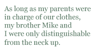

Of course we wore matching outfits. Of course we did. And it wasn’t just that we were all wearing the same color. We were wearing different sizes of the same shirt, which is a thousandhundred million times worse. I imagined that my parents had planned it as some sort of symbolic gesture — that this had been considered and discussed at length and with great aplomb: “If we dress the boys in blue jeans and olive green shirts, and you wear blue jeans and an olive green shirt — ”
Then dad interrupts: “Wait, wait, I see where you’re going with this. You and the little one can wear maroon dresses.”
Then mom with more volume and intensity: “Yes, yes. And we’ll all look like we belong...”
Mom pausing to look at dad for a second before they both exclaimed at the same time: “Together!”
Then some sort of hi-five, with dad somersaulting off the wall like Gene Kelly, and mom doing a perfect pirouette before leaning out toward him, their palms meeting right as the band explodes all at once on the final note.
All confusing aspects of my life had been hypothetically discussed by my parents in this manner, with the ultimate goal being my complete and utter embarrassment. The list of things decided this way quite possibly also included their decision to pick up the family and move to Budapest in August of 1991. Perhaps there were no somersaults or pirouettes that time. Whether or not there was a grand glorious hi-five at the end, I can’t say, but they had in fact decided to move the family to post-communist Europe so that we could tell everyone about God and Jesus and what they were missing out on. It was a big decision. There must have been some kind of fireworks to it. There was no reason what we wore should be any different.
As long as my parents were in charge of our clothes, my brother Mike and I were only distinguishable from the neck up. This did not pose much of a problem for us, and in fact, helped people recognize us as brothers — a task which otherwise might not have been possible. My brother had wild brown hair that was surprisingly thick. There wasn’t a single strand that would have considered, even for a second, the possibility of coming to rest comfortably on top of his head. He was already dangerously tall for his age, and closer and closer to being taller than me. I, on the other hand, wore glasses, heavy round plastic frames that continuously slipped down to the end of my nose, barely catching themselves before sliding off. My hair was thin, and fell flat as nails against my scalp — save one cowlick in the front, and one in the back on the opposite side. I had amazingly large buck teeth, with a gap in the middle that made a joke out of flossing. But from the neck down we were both spindly arms, bone-thin waist lines, and long awkward legs stretching away from us so far that there was no way we could control the things or keep our knees from becoming the bloody messes they were for so many years.
There was a sense that if we had been allowed to dress ourselves, we would never have looked like we were related at all, but there had to be more to it than that. It must have also been my father’s near obsessive desire to be totally fair that kept our wardrobes identical. From a purely objective statistical standpoint, there was a high likelihood that we probably would have dressed exactly alike anyway. Regardless, as the family marched down the Budapest side streets and up to the large Hungarian church together, we all must have looked very, for lack of a better word, together.
The church was, of course, conducted entirely in Hungarian, which none of us could speak at all. Not understanding church did not make it any more or less bearable for a ten-year-old kid, except there was now an incredible weight of impending boredom beforehand, which was maybe even worse than the boredom itself. My mother smiled so much on the way into the church, I was sure there was something wrong with her. I tried to catch a glimpse of the silver caps she had, clear back on her molars. Sometimes she would smile big and laugh, and the light would hit them just right, and you could see for half a second the silver and gray in the back of her mouth.
Once all of the church charades began, we sat down and stood up, and held the hymnals open. We didn’t sing, but mom didn’t lean down to see if we were mouthing the words and not making any noise, so it was fine. One of the words the Hungarian church people were singing sounds exactly like the word “naked.” My eyes got real big every time they sang it.
Once the pastor got into it, there was nothing to do, but sit and look around the church. The backs of Hungarian heads looked like the back of American heads, but with generally bushier hair, which seems like a strange thing to say, except that it was true. Back home — we still called it that even though we were months and months into this thing — there used to be parents who would let their kids bring a GI Joe to church, or a coloring book, or whatever. Not here, though. Here all of the other kids were just as miserable as we were, trying to slouch in the pew without getting slapped for slouching — trying to find something interesting to look at besides the back of someone’s head.
With as much concentration as I could manage, I started to daydream. The pastor went on and on in Hungarian while I tried to remember the scene from The Wizard of Oz with Glenda and Dorothy and the house squashing the evil witch like an insect. The striped socks and the feet curling and shrinking. I thought about going back into the house for a broom so you wouldn’t have to walk all the way to the Emerald City. Then I thought about why Dorothy wanted to go back to Kansas in the first place. I tried to think of all the reasons just to stay put. I made a list in my head:
First of all, everything in Oz was in color. My grandma told me the story once of seeing the movie in the theater, and how they didn’t know it was going to be in color until the tornado happened and the house crashed down and the door opened and there it was in green and yellow and blue and the whole theater sucked in a huge gasp of air and their eyes were the size of dinner plates. That’s how she told the story, anyway. And I guess it’s not so much that Oz was in color, but it’s that Kansas was black and white. Who wants that?
Within minutes of her arrival, Dorothy is inducted to the Munchkin Land Hall of Fame (they sing it in the song). She could spend her whole life in Kansas, trying to make some kind of life grow out of that dust bowl farm, just doing the best she could, and she’d be lucky to get a kind nod. In Oz, you walk out of your house, and they sing a song and throw you a parade.
I was distracted from the list momentarily by a girl sitting two rows in front of me. She turned her head quickly, the way women in shampoo commercials do, and flipped her long brown hair over her shoulder. She looked right into me with her even browner eyes, and smirked like she knew everything I didn’t want her to know. My chest felt really big when she did that.
We stood up to sing songs again. I recognized one of the melody lines from a hymn my mom used to sing under her breath in the mornings. I wondered if the words were the same, or if the hymn was actually about something totally different. All I could hear was naked this and naked that. I was not singing, but my smile was taking over my face.
Church is, even more than a religious sort of thing, a social one. Most everyone there knew I couldn’t say more than “hello” and “yes,” so they waved or shook my hand and then left me alone. They must have known because they knew my father couldn’t, and I was dressed just like him. The reason they said “Hello” was because we were the only foreigners in the church, and that made us famous. They were always asking my dad to get up and say something smart in church, and he always delivered. Sometimes the translators would go on for a while at the end of what he said, presumably adding a little bit of extra explanation or something, which I always thought was funny. He would say something like, “And that is how God shows his love for us” and they would say something I didn’t understand about the same number of syllables. Then he would say, “Even in the difficult times,” and they would go on for two or three minutes. No one thought this was odd at all. The other thing that no one thought was strange was that they would give dad a microphone, and sometimes the translator would just have to speak really loudly. Of course, there was no need to have dad on a microphone at all.
Like I was saying, by the time church was over, we were famous. People knew we were foreigners, and felt an obligation to at least shake our hands. People would talk to us. They talked to us some, my brother more than me, and my sister got it non-stop, because people like to assume that the younger you are, the more languages you can understand. Try talking to a baby in Swedish sometime. No one will stop you. No one will say, “He doesn’t understand Swedish” the way they would if you were talking to a ten-year-old kid.
When church was over, everyone poured out of the sanctuary into different rooms of the church and into the snowy streets. Within minutes, most of the men were outside sitting in their Soviet-era Trabants, which were still thick as thieves on the streets even though the Russians were long gone. The men were revving the engines like mad, trying to get the things warm. They rocked back and forth in the drivers seats, blowing into their hands and sometimes rolling down their windows a tiny bit so they could yell something to the man in the car parked right next to them. They yelled and yelled over the sound of the engines, and then both of the men would laugh in a sort of uproar, with each chuckle coming out of their mouths in a burst of white fog.
The women and kids filed out slowly, and stood in the doorway of the church. Then one of the Trabants would pull out of its parking spot and rumble right up to the steps, and everyone would pile in. The man would wave over his shoulder very quickly toward the row of Trabants still waiting, and everyone would know he was sort of sad that he wasn’t still yelling and laughing with them.
We stood just inside the doorway. Mom and Dad found a translator and talked to everyone about God this and God that. All of their conversations took twice as long because someone had to say exactly what they said right after they say it. Mom mostly smiled and nodded, but she wasn’t smiling and nodding big enough for me to see the silver caps on her molars. Not even close.
Apparently a bunch of the church service was about us. I knew this because everyone smiled at me real big as they walked out. I also knew because I was eavesdropping on the only conversation I could understand.
And it was in the middle of all of this — the men revving their engines and shouting, the women clamoring into the cars, and trying to find out what any one had said about me or my family in front of the church — that’s when I saw her again, slowly making her way toward the door. The girl with brown hair and even browner eyes wore a scarf around her neck and clear up over her mouth. She was, I guessed, trying to preheat her face for the cold outside. She was very beautiful, and I couldn’t stop staring.
She began walking toward the door. She was looking right at me, the way you look at someone right before you are going to say something. I kept staring. Maybe my eyes were as big as dinner plates like seeing a color movie for the first time. I wasn’t sure. I noticed that everything she was wearing was brown. Her shoes. Her coat. Her scarf. Her hair band.
She barely touched the floor between us, more kissing the church floor with her shoes than walking. It was incredible to watch her — this girl with the brown everything. Eventually, she was standing right in front of me. She stopped, pulled her brown scarf down slowly, opened her mouth, and then it came, sputtered out a perfectly smooth but heavily accented English: “Hallo.”
“Hi.”
She had a Bible in her left hand, and even it was brown. “I saw you.” She pointed toward the sanctuary, toward where we had been sitting. “Dere.”
“Yeah.”
“Jew looked very boring,” she said.
I was confused for a second, and then, “Oh! Yes! I look very bored. You meant to say bored.”
She looked down at her hands, and muttered quietly, “Jes. Bored.”
I made two fists in my pockets. I felt like such a jerk. I wanted to be anywhere else just then. I wanted the ground under my feet to split open like God makes it do sometimes when he needs to swallow up particularly evil people. Evil like the sort of people who correct the grammar of nice girls who just want to be friendly. Why couldn’t I have just said “I didn’t understand any of it”? Or “The sermon wasn’t about shapes and colors, so I’m afraid my knowledge of your language proved useless.” Or even “Yes. I was looking very boring.” Or anything at all other than what I did.
You might not think this unless you had seen the movie a hundred times, but really, if you think about it, all of the bad guys in The Wizard of Oz are fake. There are two things that really scare Dorothy. One is the wizard. When they see him for the first time, the lion runs out of there screaming, jumping through a window and all that. Of course, that’s just a rusty old man with wild white hair who is more afraid of teeny tiny soft-focused Judy Garland than anything else. The witch is the other one, and she gets killed with water. So the first time you watch the movie you are terrified, and the second time you are yelling at the TV, “Just throw some water on her!” There really is not anything to be afraid of in Oz. Not at even a little bit.
And what’s more, these simple solutions seem to come out of nowhere. The situation is totally hopeless, and then something tiny happens, like the dog goes and pulls on the curtain. Or a little girl accidentally spills some water. This is how evil people are disposed of in the land of Oz.
The reason I was thinking all of this about Oz, was because I felt really evil, and I wanted someone to spill water on me. I tried to remember what it was the evil people did that made God open the ground to swallow them. The Israelites reject Moses or something — they are always rejecting that guy — but I think this is the story with the snake on the stick? It’s all a blur, now. The Bible story, the girl, Dorothy apologizing as the witch shrinks and melts, the men in their cars, Moses and everyone ignoring him, the ground with its mouth clenched shut. I imagined myself rejecting Moses, who was holding up the snake on the stick. I tried to make myself believe that’s exactly what I had just done. I imagined it so hard I swear I could feel the floor cracking open underneath me. The girl with brown everything looked into my eyes so hard I knew she could see the inside of my skull. I looked down at my feet again, waiting.
Nothing happened.
JM Huscher is an English Teacher living abroad in Budapest, Hungary. Before moving, he co-founded the Nebraska Writers Collective, a non-profit that created unique writing workshops in Nebraska’s schools and prisons. He misses his bicycle the most.